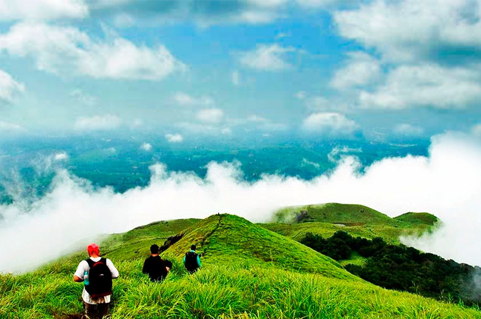

Mangalore is close to several destinations that offer a striking contrast to the coast. Across the Western Ghats, travellers can discover coffee plantations, mountain roads, rainforest scenery, waterfalls and green highland landscapes. These places can suit families, couples, photographers and nature lovers looking for a change of scenery.
The best destination depends on your available time, preferred activities and the condition of the roads. For longer journeys, an overnight stay or a multi-day itinerary can be more relaxing than attempting a long drive and a full day of sightseeing before returning.
Destinations in This Guide
1. Coorg — Coffee Country and Green Landscapes
Coorg, also known as Kodagu, is famous for coffee cultivation, green hills, local culture and a variety of accommodation options. Madikeri is a useful base for exploring selected nearby attractions. Depending on your interests, you can combine scenic viewpoints with an authorised plantation visit or a relaxed stay surrounded by greenery.
Check plantation access before visiting, as some estates are private. Rain and mist can affect visibility, so leave room in your itinerary for changing weather.

Add image: assets/blogs/coorg-hill-landscape.jpg'">2. Chikkamagaluru — Mountain Views and Coffee Estates
Chikkamagaluru is known for coffee estates, mountain scenery and access to the higher reaches of the Western Ghats. Mullayanagiri and Baba Budangiri are among the region's best-known attractions.
Access to viewpoints can depend on weather, road conditions and local restrictions. Check current arrangements before departure, especially during heavy rain or fog. If visibility is poor, choose an accessible alternative rather than taking unnecessary risks.
3. Kudremukh — Forests and Mountain Landscapes
The Kudremukh region is known for forested mountains and dramatic natural scenery. It is especially appealing to visitors interested in outdoor experiences, photography and the landscapes of the Western Ghats.
Trekking routes may have specific permit, guide and access requirements. Confirm current arrangements with the relevant authorities before travelling. Do not assume that a roadside viewpoint provides permission to enter a protected area or begin a trek.
4. Agumbe — Rainforest Scenery
Agumbe is associated with rainforest landscapes, winding roads and monsoon scenery. It can be an interesting destination for nature enthusiasts and photographers looking to experience a greener side of Karnataka.
Heavy rain may affect visibility, road safety and access to some locations. Check the forecast and local conditions before leaving, and avoid stopping on narrow bends or other unsafe sections of road for photographs.
5. Charmadi Ghat — A Scenic Mountain Drive
Charmadi Ghat is known for its winding road and lush surroundings. For some travellers, the drive through the hills is a major part of the experience. However, the route can become challenging during fog, heavy rainfall or poor visibility.
Drive cautiously, allow extra time and stop only in safe designated areas. Check for any travel advisories or restrictions before starting your journey.
6. Sakleshpur — Hills and Plantation Country
Sakleshpur is an option for travellers interested in green landscapes, plantation surroundings and a peaceful stay away from busy city areas. The region offers opportunities to enjoy the scenery at a relaxed pace.
Some attractions are on private property or have specific access arrangements. Confirm permission, operating hours and directions before visiting, and choose accommodation that suits your group's needs.
7. Bisle Ghat Region — Forest and Western Ghats Views
The wider Bisle Ghat region is known for forest scenery and views of the Western Ghats. It may appeal to travellers who enjoy quieter natural surroundings and scenic drives.
Road access and viewpoint conditions can vary, especially during the monsoon. Follow local restrictions, avoid entering protected or private areas without permission, and check the return route before setting out.
How to Choose the Right Hill Destination
- For a relaxed family holiday: Consider accommodation, road access and a manageable number of stops.
- For mountain views: Check visibility, weather and the condition of hill roads.
- For trekking and outdoor activities: Confirm permits, guides, access rules and any seasonal restrictions.
- For a short break: Select a destination that leaves enough time for the drive and sightseeing.
- For a longer holiday: Consider an overnight stay or a multi-day itinerary to avoid rushing.
Sample Two-Day Hill Holiday Plan
This is a general planning framework, not a fixed itinerary. Longer journeys or destinations with restricted access may require additional days.
What to Pack for a Hill Trip
- Rain protection and a light jacket suitable for changing temperatures.
- Comfortable walking shoes with suitable grip.
- Drinking water and snacks for the journey.
- Essential medicines and personal care items.
- A charged phone, charging cable and important travel contacts.
- Any required booking confirmations or trekking permissions.
Driving Safely in the Western Ghats
Hill roads can include sharp bends, steep sections, fog and changing weather. Avoid rushing, maintain a safe distance from other vehicles and never stop in unsafe locations for photographs. During heavy rain, reconsider outdoor activities and follow official traffic or access advisories.
Plan Your Hill Trip with Radhakrishna Taxi Service
Radhakrishna Taxi Service accepts enquiries for trips from Mangalore to Coorg, Chikkamagaluru and other destinations across Karnataka. Share your travel dates, pickup location, passenger count, destination and preferred vehicle to request availability and a quotation.
For longer journeys, confirm the complete itinerary, total fare, waiting time, overnight arrangements and applicable tolls or parking charges before confirming your trip.
Planning a Hill Holiday?
Contact Radhakrishna Taxi Service to enquire about travel arrangements from Mangalore.
Enquire on WhatsApp Call +91 81477 71217Frequently Asked Questions
Which hill destination should I choose from Mangalore?
Coorg and Chikkamagaluru are popular options. Agumbe, Sakleshpur and the Kudremukh region are alternatives, depending on your interests, travel dates and available time.
Can I visit a hill station in one day from Mangalore?
It depends on the destination, traffic, road conditions and how many places you want to visit. A multi-day trip is often more comfortable for longer journeys.
Is the monsoon a good time to visit the Western Ghats?
The monsoon brings lush scenery but can also cause heavy rain, fog and difficult driving conditions. Check weather and road advisories before travelling.
Do treks in the Kudremukh region require permission?
Some trekking routes require permits, authorised guides or advance arrangements. Confirm current requirements with the relevant authorities before your trip.
How can I enquire about a taxi from Mangalore?
Call +91 81477 71217 or send a WhatsApp enquiry with your travel dates, destination and passenger count.
Weather, road access, trekking permissions and local restrictions can change. Check current conditions and official guidance before departure.